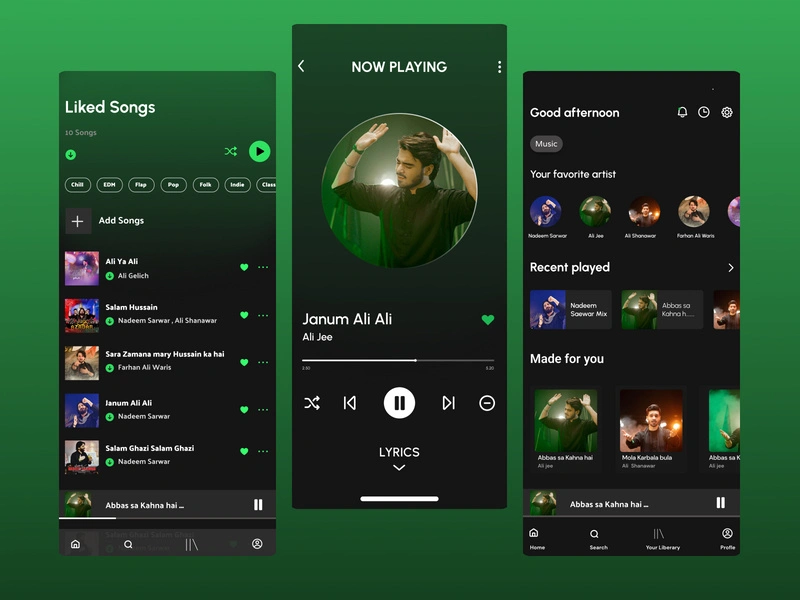

Get product tips occasionally. You can unsubscribe anytime.
Hurry, last chance! Subscribe now
Only a few spots left. You can opt-out later in settings.
Emotional design is the idea that digital products are not just made to function but to make people feel something while using them.
Apps and websites today are designed in very intentional ways to create emotions like trust, excitement and comfort.
Some of these emotional choices are positive and supportive like when an app helps users feel safe while entering personal information or encourages them to reach their goals without adding stress.
But emotional design can also cross the line and become manipulative like when apps pressure people into making fast decisions with fake countdown timers or guilt-based language.
The goal of this website is to explore both the positive and the harmful sides of emotional design and to explain how it can improve user experience or be used in unethical ways to push engagement or profit.
This guide will look at real examples from apps, psychological design principles and ethical boundaries that designers should avoid crossing.
Understanding emotional design is important especially for future designers and developers because emotions can influence decisions more strongly than information alone.
Positive & Human-Centered Emotional Design
Positive and human-centered emotional design means making people feel calm, respected,
and in control when they use a product. Don Norman explains that when something looks and feels nice,
people become less stressed and solve problems more easily (Emotion & Design: Attractive Things Work Better). The Nielsen Norman Group also shows that
people trust and enjoy designs that look clean and easy to use (The Aesthetic–Usability Effect).
A good example of this is Spotify. The app uses soft colors, smooth animations,
and simple icons that make users feel relaxed while browsing songs. When you finish a playlist, it shows
a friendly message like “Great choice!” which gives a small feeling of reward. Nothing feels rushed or stressful.
This kind of emotional touch keeps users coming back because it feels personal and supportive.

Spotify Example
Spotify uses calm green tones, smooth motion and simple layouts to create comfort and trust.
It feels personal and friendly instead of stressful or pushy.
The book User Experience Is Brand Experience explains that design connects people with values like balance,
simplicity, and trust. It says that a product becomes successful when it helps people feel good about their choices,
not pressured by them. Jon Yablonski’s Laws of UX adds that following human behavior patterns such as limiting
choices or giving quick feedback helps people stay relaxed and focused.
Reflection
Looking at apps like Spotify made me see how small emotional details shape how people feel online.
Simple design choices, like calm colors and friendly text, can turn a normal experience into something
enjoyable. I think positive design is about kindness. It should guide users without stress, guilt, or confusion.
I want to remember that emotion matters just as much as function when I design something.
What Comes Next
The next section will explore how emotional design can turn harmful. Here are my main questions:
When does “helpful” design start to pressure users?
Why do some apps use fake urgency or guilt to get clicks?
How can designers stay honest but still keep users engaged?
This article breaks down how certain clean and elegant designs can quietly pressure users into taking actions they didn’t plan
like signing up or sharing data. It’s a great example of how visual polish can hide manipulation. I recommend it because it helps
designers recognize that even good-looking interfaces can create harm if emotional influence is used the wrong way.
This article explains how attractive and well-organized designs can make interfaces feel easier and more trustworthy to use, even when the function is the same.
It connects emotion with usability in a simple, research-based way. I recommend it because it’s perfect for understanding the psychological
side of emotional design and fits well in the Theory and Psychology section.